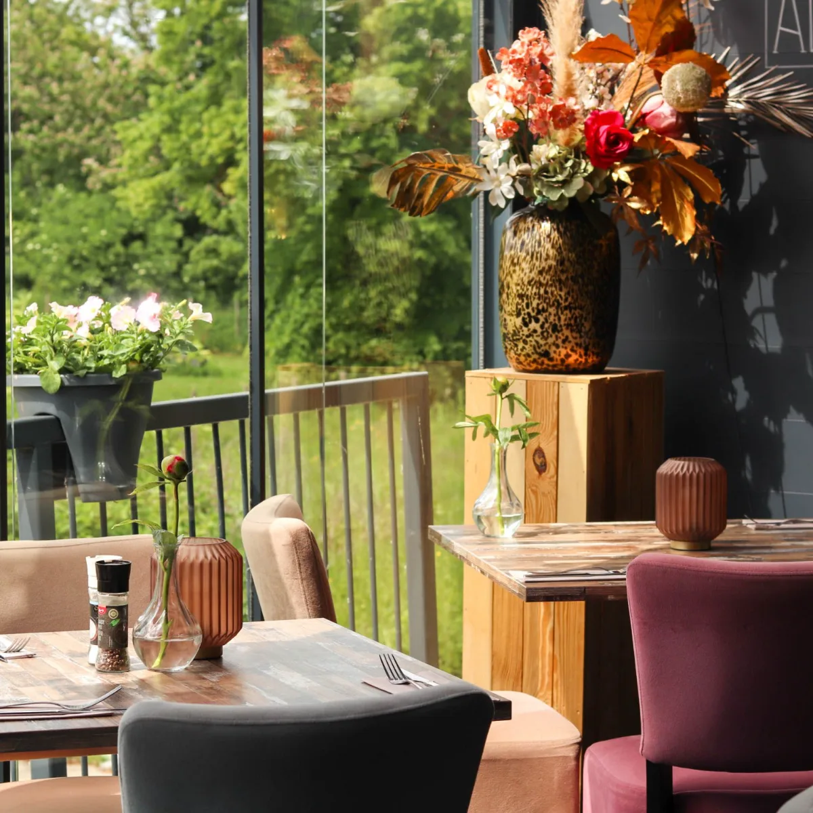
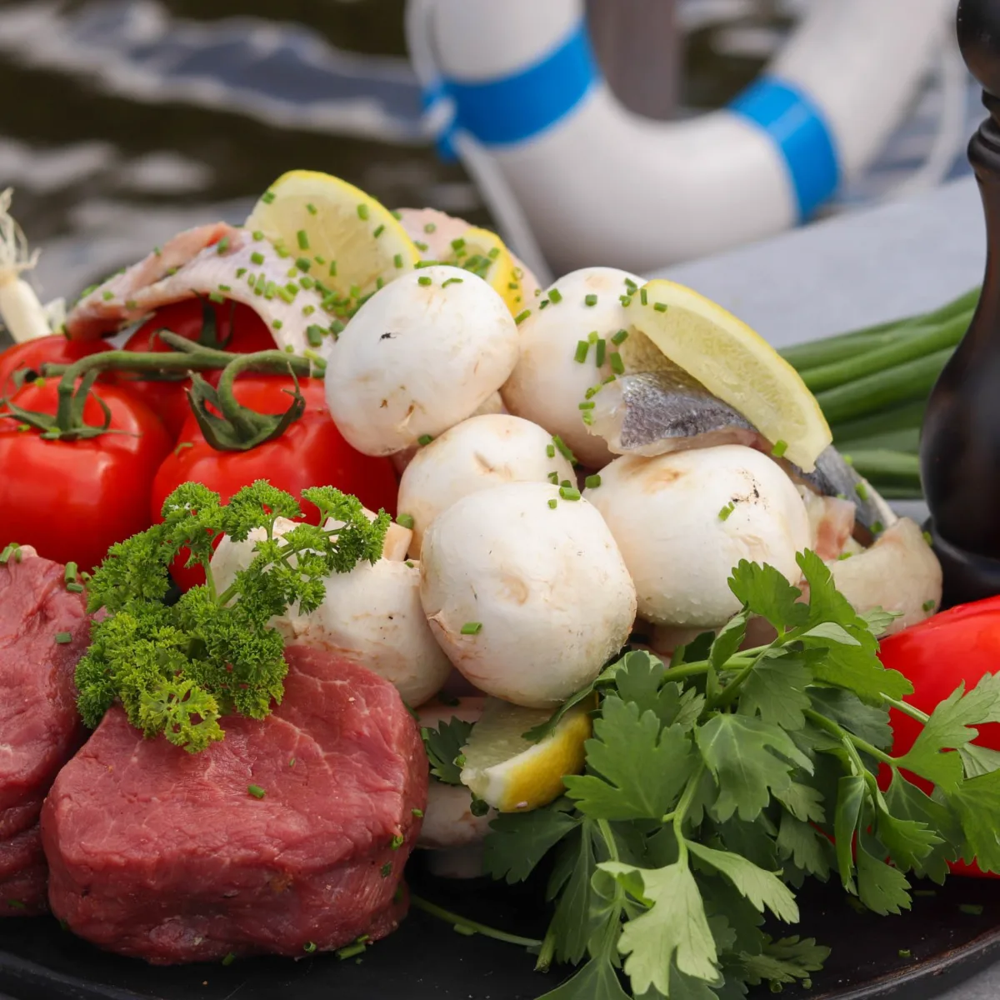
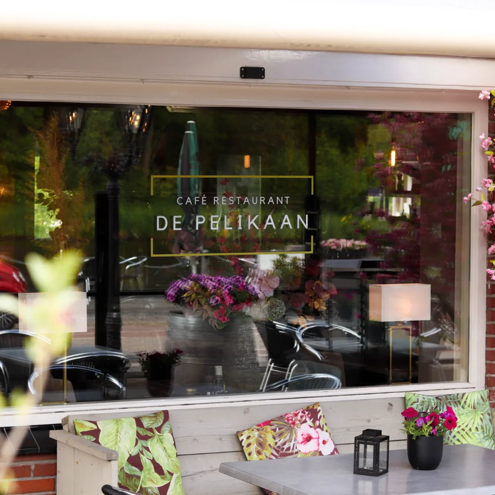
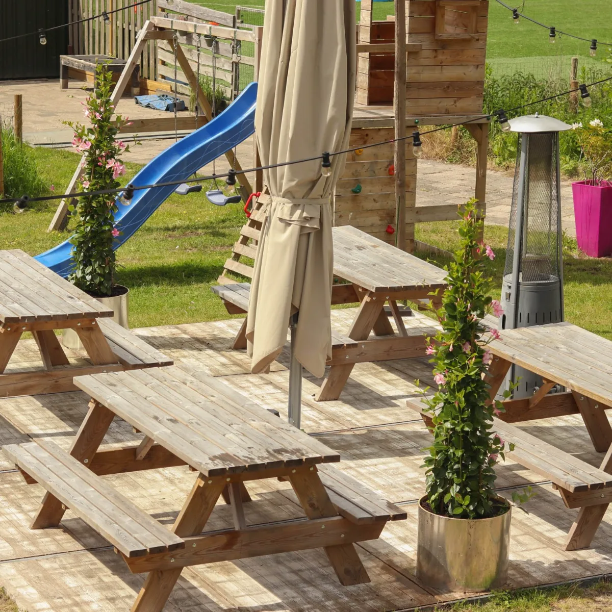
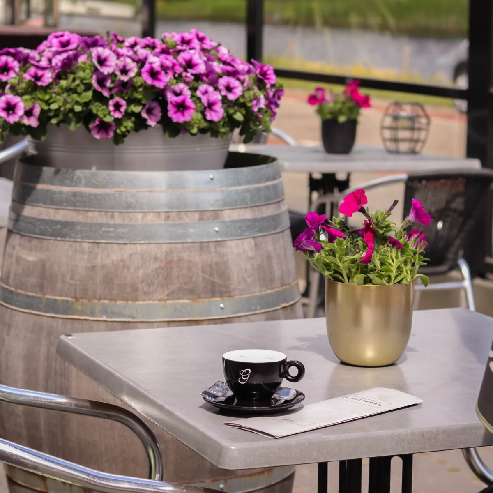
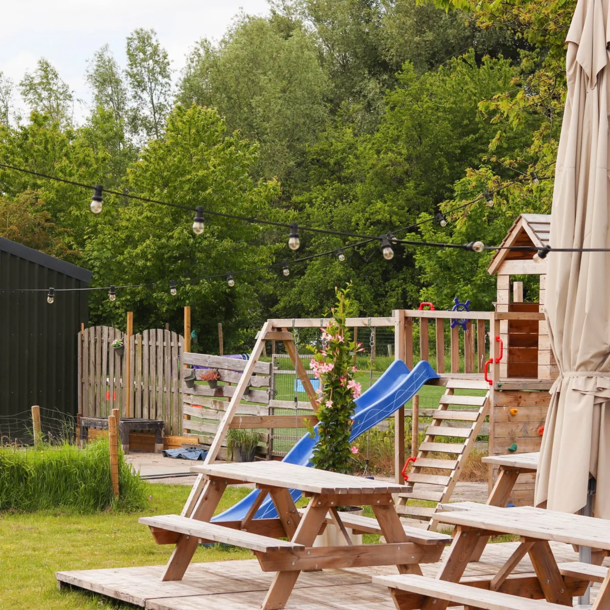
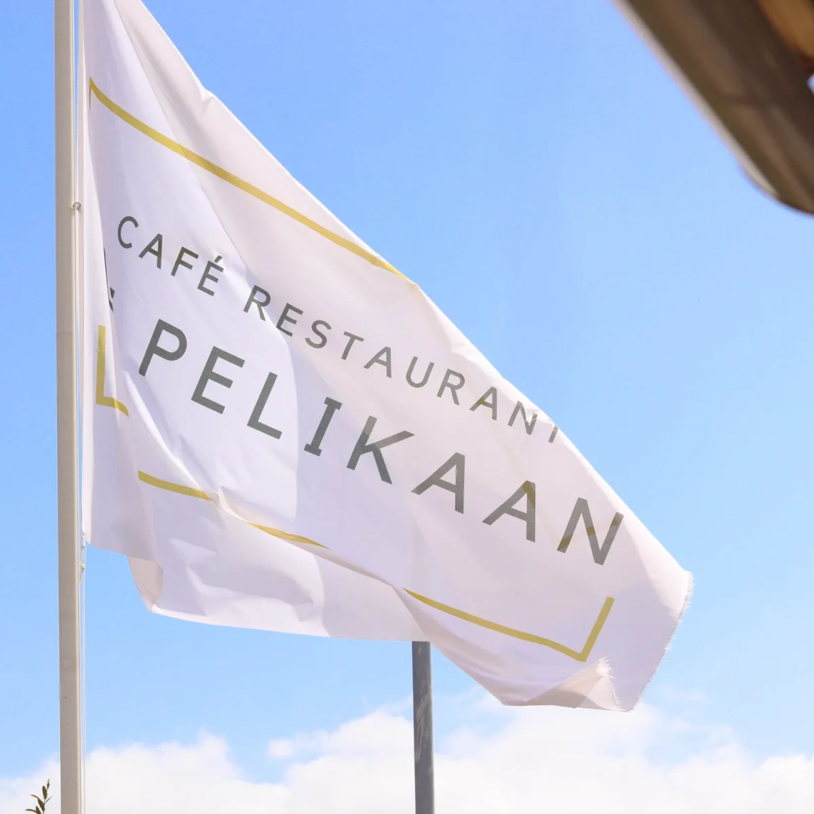

Lunch, diner en een terras aan het water.
In Badhoevedorp, tegenover het Amsterdamse Bos. Gratis parkeren naast de deur.
Elke dag open van 11.30 tot 22.00 uur
Ons restaurant
Geniet van een voortreffelijke lunch of diner in ons gezellige restaurant of bij mooi weer op het terras.
Laat u verrassen door ons aangenaam geprijsde lunchmenu voor een snelle zakelijke lunch, of neem de tijd en geniet uitgebreid van een diner. Parkeren is gratis en naast de deur. Bij mooi weer serveren wij de lunch op ons terras aan het water.
- Elke dag open11.30 tot 22.00 uur
- Gratis parkerennaast de deur
- Terrasaan het water

De menukaart
Al onze voor- en hoofdgerechten zijn vanaf 12.00 uur te bestellen. Tussen 16.00 en 17.00 uur is de keuken gesloten. Heeft u een allergie of dieetwens? Laat het ons weten, we helpen u graag.
Van 12.00 tot 16.00 uur. Broodjes naar keuze op een meergranenbol of witte baguette.
Erbij
De menukaart als PDF: Nederlands of English. Prijzen in euro's.

Buiten aan het water
Bij mooi weer serveren wij de lunch op ons terras aan het water. Tussen de bloembakken en de parasols, met het Amsterdamse Bos vlak tegenover ons.
Voor de kinderen staan er speeltoestellen vlak bij de picknicktafels.
Bel voor een tafel

Bezorgen of afhalen
U kunt alle gerechten van de menukaart ook bestellen om af te halen of te laten bezorgen. Bel ons even, dan regelen we het.
- Bestellen
- 020 604 18 25
- Bezorgen
- Maandag tot en met donderdag, vóór 18.00 of na 20.00 uur
- Afhalen
- Bel ons en spreek een tijd af

Een familiebedrijf met een lange geschiedenis
De Pelikaan is een familiebedrijf dat van ouders op kind is overgegaan. De grond wordt gepacht van Schiphol, met als voorwaarde dat de naam De Pelikaan bleef. Jarenlang was het een vaste lunchplek voor mensen van de luchthaven en de bedrijven eromheen.
Op de kaart staat nog altijd een Franse uiensoep naar traditioneel recept, en de in roomboter gebakken zeetong.
Lees het verhaal "Hardlopers in de Pelikaan" op ons blogEr is veel te doen in de buurt
De Pelikaan ligt midden in een gebied waar ontzettend veel te doen is. Combineer uw lunch of diner met:
Het Amsterdamse Bos
Maak een boswandeling in het bos dat tegenover ons ligt.
Het Oude Dorp van Amstelveen
Fiets of wandel naar het pittoreske Oude Dorp met zijn eigen horecagebied.
Winkelen
Bezoek Winkelcentrum Amstelveen of het Gelderlandplein, met alle luxe merken.
Reserveren en contact
Reserveren kan alleen telefonisch.
020 604 18 25- Adres
- Nieuwe Meerdijk 447
1171 PA Badhoevedorp - Open
- Tot nader order elke dag van 11.30 tot 22.00 uur
Lunch 12.00 tot 16.00 uur, keuken gesloten van 16.00 tot 17.00 uur - Parkeren
- Gratis, naast de deur